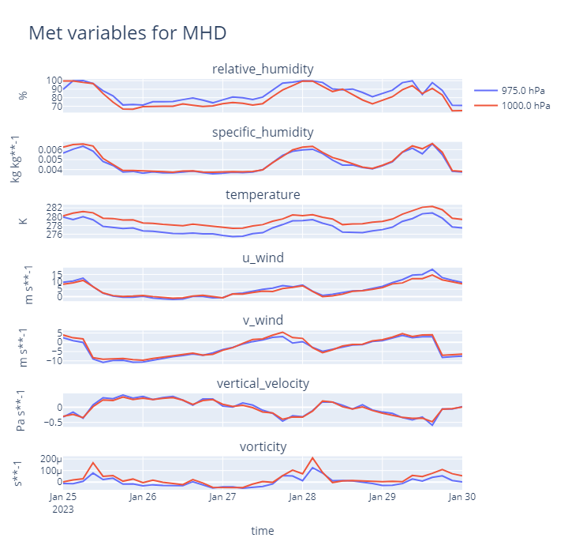
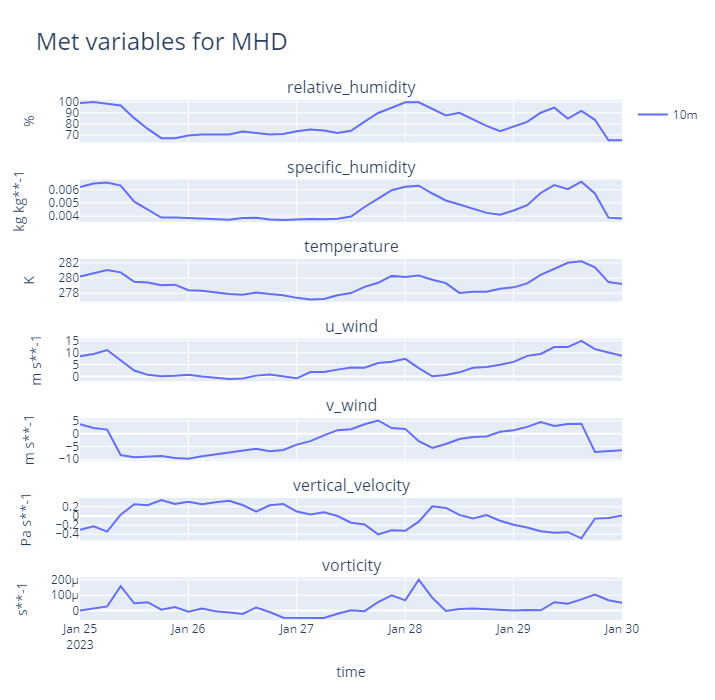

Retrieving data from remote archives#
This tutorial covers the retrieval of data from the ICOS Carbon Portal [1], CEDA archives [2] and Copernicus Climate Data Store.
Using the tutorial object store#
As in the previous tutorial, we will use the tutorial object store to avoid cluttering your personal object store.
In [1]: from openghg.tutorial import use_tutorial_store
In [1]: use_tutorial_store()
1. ICOS#
Atmospheric gas measurements can be retrieved from the ICOS Carbon
Portal using OpenGHG. To do so we’ll use the retrieve_atmospheric
function from openghg.retrieve.icos.
Authentication#
To access the ICOS Carbon Portal we use the icoscp module which requires
an account to have been set up and some authentication steps to be followed:
https://icos-carbon-portal.github.io/pylib/icoscp/authentication/.
As of 02/09/2025 (icoscp v0.2.2), this can be set up once by creating a personal account (not an institutional account) which has a username and password and running the following:
In [1]: from icoscp_core.icos import auth
Out [1]: auth.init_config_file()
This should prompt the user to supply their username and password and should only need to be run once. Note that the credentials (API key) to access your ICOS account will be refreshed every 27 hours but running the above lines of code should allow this to be automatically refreshed.
If after running these lines of code, an `AuthenticationError` is received when accessing the functions in the `openghg.retrieve.icos` module please check the latest Authentication details from icoscp and follow any instructions provided.
Checking available data#
You can find the stations available in ICOS using their map interface. Click on a site to see its information, then use its three letter site code to retrieve data. You can also use the search page to find available data at a given site.
Using retrieve_atmospheric#
Note
Outside of this tutorial, if you have write access to multiple object stores you
will need to pass the name of the object store you wish to write to to
the store argument of the retrieve_atmospheric function as the function
caches the data retrieved from ICOS.
First we’ll import retrieve_atmospheric from the retrieve submodule, then
we’ll retrieve some data from Saclay (SAC). The function will
first check for any data from SAC already stored in the object
store, if any is found it is returned, otherwise it’ll retrieve the data
from the ICOS Carbon Portal, this may take a bit longer. Note that we pass the update_mismatch=”from_source”
as there is a difference in some of the metadata and attributes that OpenGHG will raise an error for.
For more information about this see the “Metadata and attributes” tutorial.
In [2]: from openghg.retrieve.icos import retrieve_atmospheric
In [3]: sac_data = retrieve_atmospheric(site="SAC", species="ch4", sampling_height="100m", update_mismatch="from_source")
In [4]: len(sac_data)
Out[4]: 2
Here sac_data is a list of two ObsData objects, each containing differing amounts of data.
We can see why there are two versions of this data by checking the dataset_source key
in the attached metadata.
In [5]: dataset_sources = [obs.metadata["dataset_source"] for obs in sac_data]
In [6]: dataset_sources
Out[6]: ['ICOS', 'European ObsPack']
Let’s say we want to look at the ICOS dataset, we can select that first dataset
In [7]: sac_data_icos = sac_data[0]
In [8]: sac_data_icos
Out[8]:
ObsData(data=<xarray.Dataset>
Dimensions: (time: 40510)
Coordinates:
* time (time) datetime64[ns] 2017-05-31 ... 2022-02-...
Data variables:
flag (time) object 'O' 'O' 'O' 'O' ... 'O' 'O' 'O'
ch4_number_of_observations (time) int64 11 11 11 3 11 11 ... 12 12 12 12 12
ch4_variability (time) float64 1.551 5.315 15.57 ... 0.508 2.524
ch4 (time) float64 1.935e+03 1.938e+03 ... 2.05e+03
Attributes: (12/33)
species: ch4
instrument: RAMCES - G24
instrument_data: ['RAMCES - G24', 'http://meta.icos-cp.eu/resource...
site: SAC
measurement_type: ch4 mixing ratio (dry mole fraction)
units: nmol mol-1
... ...
Conventions: CF-1.8
file_created: 2023-06-14 12:52:11.547608+00:00
processed_by: OpenGHG_Cloud
calibration_scale: unknown
sampling_period: NOT_SET
sampling_period_unit: s, metadata={'station_long_name': 'sac', 'station_latitude': 48.7227, 'station_longitude': 2.142, 'species': 'ch4', 'network': 'icos', 'data_type': 'surface', 'data_source': 'icoscp', 'source_format': 'icos', 'icos_data_level': '2', 'site': 'sac', 'inlet': '100m', 'inlet_height_magl': '100', 'instrument': 'ramces - g24', 'sampling_period': 'not_set', 'calibration_scale': 'unknown', 'data_owner': 'morgan lopez', 'data_owner_email': 'morgan.lopez@lsce.ipsl.fr', 'station_height_masl': 160.0, 'dataset_source': 'ICOS'})
We can see that we’ve retrieved ch4 data that covers 2021-07-01 -
2022-02-28. A lot of metadata is stored during the retrieval
process, including where the data was retrieved from (dobj_pid in
the metadata), the instruments, their associated metadata and a
citation string.
You can see more information about the instruments by going to the link
in the instrument_data section of the metadata
In [9]: metadata = sac_data_icos.metadata
In [10]: metadata["instrument_data"]
In [11]: metadata["citation_string"]
Here we get the instrument name and a link to the instrument data on the ICOS Carbon Portal.
Viewing the data#
As with any ObsData object we can quickly plot it to have a look.
NOTE: the plot created below may not show up on the online documentation. If you’re using an ipython console to run through the tutorial, the plot will open in a new browser window.
In [12]: sac_data_icos.plot_timeseries()
Data levels#
Data available on the ICOS Carbon Portal is made available under three different levels (see docs).
Data level 1: Near Real Time Data (NRT) or Internal Work data (IW).
Data level 2: The final quality checked ICOS RI data set, published by the CFs, to be distributed through the Carbon Portal. This level is the ICOS-data product and free available for users.
Data level 3: All kinds of elaborated products by scientific communities that rely on ICOS data products are called Level 3 data.
By default level 2 data is retrieved but this can be changed by passing
data_level to retrieve_icos.
Note that level 1 data may not have been quality checked.
Below we’ll retrieve some more recent data from SAC.
In [13]: sac_data_level1 = retrieve_atmospheric(site="SAC", species="CH4", sampling_height="100m", data_level=1, dataset_source="icos")
In [14]: sac_data_level1.data.time[0]
In [15]: sac_data_level1.data.time[-1]
You can see that we’ve now got quite recent data, usually up until a day or so before these docs were built. The ability to retrieve different level data has been added for convenience, choose the best option for your workflow.
In [16]: sac_data_level1.plot_timeseries(title="SAC - Level 1 data")
Forcing retrieval#
As ICOS data is cached by OpenGHG you may sometimes need to force a retrieval from the ICOS Carbon Portal.
If you retrieve data using retrieve_icos and notice that it does not
return the most up to date data (compare the dates with those on the
portal) you can force a retrieval using force_retrieval.
In [17]: new_data = retrieve_atmospheric(site="SAC", species="CH4", data_level=1, force_retrieval=True)
Here we get a message telling us there is no new data to process, this will depend on the rate at which datasets are updated on the ICOS Carbon Portal.
2. CEDA#
Note
Outside of this tutorial, if you have write access to multiple object stores you
will need to pass the name of the object store you wish to write to to
the store argument of the retrieve_surface function as the function
caches the data retrieved from CEDA.
To retrieve data from CEDA you can use the retrieve_surface function
from openghg.retrieve.ceda. This lets you pull down data from CEDA, process
it and store it in the object store. Once the data has been stored
successive calls will retrieve the data from the object store.
NOTE: For the moment only surface observations can be retrieved and it is expected that these are already in a NetCDF file. If you find a file that can’t be processed by the function please open an issue on GitHub and we’ll do our best to add support that file type.
To pull data from CEDA you’ll first need to find the URL of the data. To
do this use the CEDA data browser and
copy the link to the file (right click on the download button and click
copy link / copy link address). You can then pass that URL to
retrieve_surface, it will then download the data, do some
standardisation and checks and store it in the object store.
We don’t currently support downloading restricted data that requires a login to access. If you’d find this useful please open an issue at the link given above.
Now we’re ready to retrieve the data.
In [18]: from openghg.retrieve.ceda import retrieve_surface
In [19]: url = "https://dap.ceda.ac.uk/badc/gauge/data/tower/heathfield/co2/100m/bristol-crds_heathfield_20130101_co2-100m.nc?download=1"
In [20]: hfd_data = retrieve_surface(url=url)
In [21]: hfd_data
Out[21]:
ObsData(data=<xarray.Dataset>
Dimensions: (time: 955322)
Coordinates:
* time (time) datetime64[ns] 2013-11-20T12:51:30 ......
Data variables:
co2 (time) float64 401.4 401.4 401.5 ... 409.2 409.1
co2_variability (time) float64 0.075 0.026 0.057 ... 0.031 0.018
co2_number_of_observations (time) float64 19.0 19.0 20.0 ... 19.0 19.0 19.0
Attributes: (12/21)
comment: Cavity ring-down measurements. Output from GCWerks
Source: In situ measurements of air
Processed by: Aoife Grant, University of Bristol (aoife.grant@bri...
data_owner_email: s.odoherty@bristol.ac.uk
data_owner: Simon O'Doherty
inlet_height_magl: 100.0
... ...
data_type: surface
data_source: ceda_archive
network: CEDA_RETRIEVED
sampling_period: NA
site: hfd
inlet: 100m, metadata={'comment': 'Cavity ring-down measurements. Output from GCWerks', 'Source': 'In situ measurements of air', 'Processed by': 'Aoife Grant, University of Bristol (aoife.grant@bristol.ac.uk)', 'data_owner_email': 's.odoherty@bristol.ac.uk', 'data_owner': "Simon O'Doherty", 'inlet_height_magl': 100.0, 'Conventions': 'CF-1.6', 'Conditions of use': 'Ensure that you contact the data owner at the outset of your project.', 'File created': '2018-10-22 16:05:33.492535', 'station_long_name': 'Heathfield, UK', 'station_height_masl': 150.0, 'station_latitude': 50.97675, 'station_longitude': 0.23048, 'Calibration_scale': 'NOAA-2007', 'species': 'co2', 'data_type': 'surface', 'data_source': 'ceda_archive', 'network': 'CEDA_RETRIEVED', 'sampling_period': 'NA', 'site': 'hfd', 'inlet': '100m'})
Now we’ve got the data, we can use it as any other ObsData object,
using data and metadata.
In [22]: hfd_data.plot_timeseries()
Within an ipython session the plot will be opened in a new window, in a notebook it will appear in the cell below.
Retrieving a second time#
The second time we (or another user) retrieves the data it will be pulled
from the object store, this should be faster than retrieving from CEDA.
To get the same data again use the site, species and inlet
arguments.
In [23]: hfd_data_ceda = retrieve_surface(site="hfd", species="co2")
In [24]: hfd_data_ceda
3. Retrieving meteorological data from Copernicus#
To retrieve meteorological data from the Copernicus Climate Data Store (CDS)
for the position of a selected site, you can use the retrieve_site_met function from openghg.retrieve.met.
Accessing the CDS#
To download data using this functionality, user access to the CDS is required. See the CDS documentation for details of how to gain access to this service through the Application Programme Interface (API).
Once this has been setup, access from openghg to the CDS can be checked using the check_cds_access function. If this is
working as expected this should produce the following output:
In [25]: from openghg.retrieve.met import check_cds_access
In [26]: check_cds_access()
(instructions: Follow the instructions here https://cds.climate.copernicus.eu/how-to-api)
1. Register/log-in to Copernicus
2. from your profile, copy the url and key
3. copy them into a file on /user/home/ab12345/.cdsapi
4. ensure the cdsapi library is installed
your client loaded successfully!
Downloading and storing the data#
The retrieve_site_met function expects to be supplied with a known site code and the relevant network.
Details of known site codes and details can be found within the
openghg_defs repository
This function will use the site code and the network to find the site and inlet heights. These inlets can then be used to
select the appropriate pressure levels (i.e. above and below the pressure height) from within the meteorological data.
For example, for TAC with height 64m and inlets ([‘54magl’, ‘100magl’, ‘185magl’]), which correspond to pressure levels [967.9, 984.7, 978.7], this will extract [‘950’, ‘975’, ‘1000’]. Note that all the relevant pressure levels for all inlets will be selected and downloaded.
In [27]: from openghg.retrieve.met._ecmwf import retrieve_site_met
In [28]: local_save_path = None # UPDATE to select a location to save locally which isn't the default $HOME/met_data
In [29]: retrieve_site_met(site="mhd", network="agage", years="2023", local_save_path=local_save_path)
You can download specific months by also passing a 2-digit string or list of 2-digit strings
i.e. month="09" or month=["10","11"]
Retrieving the data from the object store#
Once the data has been downloaded to an object store, this can be retrieved using:
In [30]: from openghg.retrieve import search_met
In [31]: met_results = search_met(site="TAC")
In [8]: met_results.results
In [32]: met_data = met_results.retrieve()
In [10]: met_data.data
<xarray.Dataset> Size: 62kB
Dimensions: (time: 248, pressure_level: 2, lat: 2, lon: 2,
inlet_height: 1)
Coordinates:
expver (time) <U4 4kB dask.array<chunksize=(248,), meta=np.ndarray>
* inlet_height (inlet_height) <U6 24B '10magl'
inlet_pressure (inlet_height) float64 8B dask.array<chunksize=(1,), meta=np.ndarray>
* lat (lat) float64 16B 53.5 53.25
* lon (lon) float64 16B -10.0 -9.75
number int64 8B ...
* pressure_level (pressure_level) float64 16B 1e+03 975.0
* time (time) datetime64[ns] 2kB 2023-01-01 ... 2023-01-31T21...
Data variables:
relative_humidity (time, pressure_level, lat, lon) float32 8kB dask.array<chunksize=(248, 2, 2, 2), meta=np.ndarray>
specific_humidity (time, pressure_level, lat, lon) float32 8kB dask.array<chunksize=(248, 2, 2, 2), meta=np.ndarray>
temperature (time, pressure_level, lat, lon) float32 8kB dask.array<chunksize=(248, 2, 2, 2), meta=np.ndarray>
u_wind (time, pressure_level, lat, lon) float32 8kB dask.array<chunksize=(248, 2, 2, 2), meta=np.ndarray>
v_wind (time, pressure_level, lat, lon) float32 8kB dask.array<chunksize=(248, 2, 2, 2), meta=np.ndarray>
vertical_velocity (time, pressure_level, lat, lon) float32 8kB dask.array<chunksize=(248, 2, 2, 2), meta=np.ndarray>
vorticity (time, pressure_level, lat, lon) float32 8kB dask.array<chunksize=(248, 2, 2, 2), meta=np.ndarray>
Attributes:
Conventions: CF-1.7
GRIB_centre: ecmf
GRIB_centreDescription: European Centre for Medium-Range Weather Forecasts
GRIB_subCentre: 0
author: OpenGHG Cloud
history: 2025-11-28T14:27 GRIB to CDM+CF via cfgrib-0.9.1...
institution: European Centre for Medium-Range Weather Forecasts
met_source: ecmwf
network: agage
processed: 2025-11-28 14:34:11.617494+00:00
site: mhdPlotting#
To plot the data you can use the openghg.plotting.plot_met_timeseries function with your search results.
For this you can define the date range and the variables to plot. The parameter inlet_height determines what gets plotted.
If inlet=None or is left empty, the extracted pressure levels get plotted without modification.
In [33]: from openghg.plotting import plot_met_timeseries
In [34]: plot_met_timeseries(met_data, start_date="2023-01-15", end_date="2023-01-30")

To select a specific inlet using the inlet keyword will plot only that height (for a valid inlet height).
In [35]: plot_met_timeseries(met_data, start_date="2023-01-15", end_date="2023-01-30", inlet="10magl")
A value of inlet="all", can also be supplied and for this the meteorology gets interpolated linearly in height to each inlet.

4. Cleanup#
If you’re finished with the data in this tutorial you can cleanup the
tutorial object store using the clear_tutorial_store function.
In [36]: from openghg.tutorial import clear_tutorial_store
In [37]: clear_tutorial_store()
INFO:openghg.tutorial:Tutorial store at /home/gareth/openghg_store/tutorial_store cleared.
Footnotes